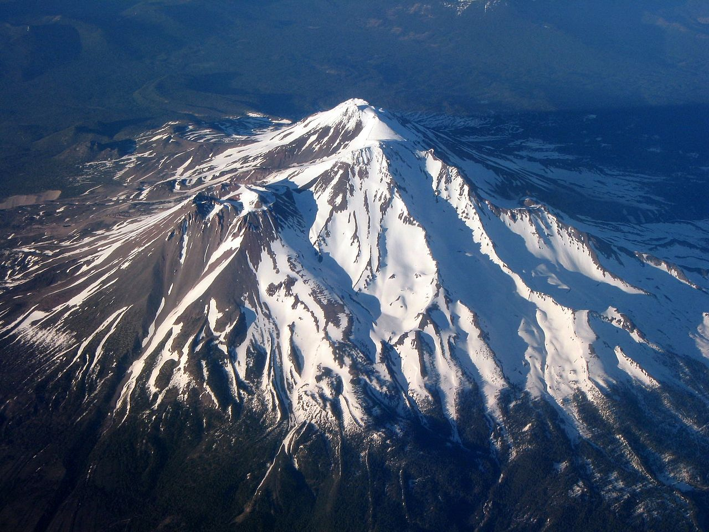
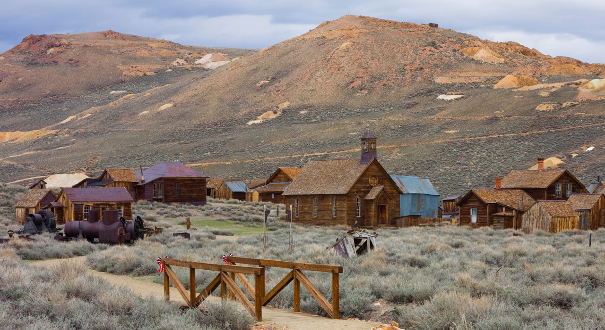

Off the Beaten Path
Looking for hidden gems and unique experiences? Explore these off-the-beaten-path destinations in California that offer a different side of the state's beauty and charm.
Mount Shasta
Located in Northern California, Mount Shasta is a stunning snow-capped mountain known for its natural beauty and spiritual significance. Hike through pristine wilderness, explore the alpine lakes, and experience the tranquility of this majestic peak.
Learn MoreChannel Islands National Park
Situated off the coast of Southern California, the Channel Islands National Park is a hidden paradise. Accessible only by boat, these unspoiled islands offer opportunities for hiking, wildlife spotting, and diving in crystal-clear waters teeming with marine life.
Learn MoreSolvang

Tucked away in the Santa Ynez Valley, Solvang is a charming Danish village that feels like a slice of Europe in California. Stroll through streets lined with windmills, enjoy Danish pastries, and explore the local wineries that dot the surrounding countryside.
Learn MoreBodie State Historic Park
Step back in time at Bodie State Historic Park, a well-preserved ghost town in the Eastern Sierra region. Explore the deserted buildings, learn about the town's gold rush history, and witness the eerie atmosphere of this once-booming mining town.
Learn MoreTrinidad
Nestled on the rugged Northern California coast, Trinidad is a small coastal town that offers breathtaking scenery and a tranquil atmosphere. Discover hidden coves, walk along scenic trails, and experience the laid-back charm of this coastal gem.
Learn More